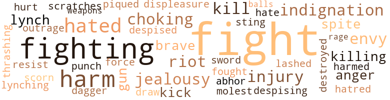

Lillian Simmons; Or, The Conflict of Sections, by Shackelford, Otis M. (1915)
23 music-related terms matched in this text.
Most frequent terms in this topic: section (7); music (3); line (3); piano (2); kick (2)
epistle.n.02
Definition: a book of the New Testament written in the form of a letter from an Apostle
| word | sentence |
|---|---|
| epistle | Charles Christopher received it in due time and would have been infinitely happy had not the culprit who applied the torch to his prosperous business been discovered and proved to be the brother of the beautiful sym - pathetic girl , who had written this love-in - spired epistle . |
kick.v.04
Definition: kick a leg up
| word | sentence |
|---|---|
| kick | Will any white man dare to come in here and kick you aroun ' an ' impose ' pon you ? |
| kick | Do n't wait till de white folks kick you out an den blame de bad Negroes from de Souf for it. , " An ' annudder thing you is wrong in , you has de same spirit in you dat de mob has in de Souf . |
music.n.01
Definition: an artistic form of auditory communication incorporating instrumental or vocal tones in a structured and continuous manner
| word | sentence |
|---|---|
| music | Look how they did when I attempted to get up a music class . |
| music | And I know that I am better prepared to teach music than the teacher that most of them have secured . |
| music | Her voice was like sweet music to his ears and siren like , she had lured him and won him to her purpose . |
musical_instrument.n.01
Definition: any of various devices or contrivances that can be used to produce musical tones or sounds
| word | sentence |
|---|---|
| instrument | Abraham Lincoln , that far-seeing states - man , that diplomat , that instrument in God 's hand , caught the idea in the air as it were , that " He who would be free must fight , " and placed weapons of war in the hands of Negro men and boys , bidding them to free themselves . |
piano.n.01
Definition: a keyboard instrument that is played by depressing keys that cause hammers to strike tuned strings and produce sounds
| word | sentence |
|---|---|
| piano | Cooking , sewing and piano play - ing were her accomplishments and she was very proud of her . |
| piano | She staggered from the piano against which she was leaning , and fell across her bed , and for a long time she lay in a sort of silly hysterical stupor . |
section.n.01
Definition: a self-contained part of a larger composition (written or musical)
| word | sentence |
|---|---|
| section | We are in - dignant at a certain undesirable element from another section of this country who have come among us and who have brought with them habits and ideas that are a menace to this community , and a detriment to the wel - fare of the colored citizenry , and we have assembled here this night for the purpose of taking positive steps toward ridding our - selves of this undesirable element , and to try to secure redress for some of the wrongs al - ready inflicted upon us . |
| section | Having , however , found employment in a Northern hotel , for it was in the North he was now located , he was thrown in company with young men whose training was different to his , and which was in keeping with the section in which they lived . |
| section | Your fighting policy will not work down in our section . |
| section | And I am convinced of this fact that , wherever this rough , ignorant and uncouth class of Negroes can be controlled or held at bay , the whites of this section are fair and will exhibit no prejudice ! |
| section | They could never have secured the advantage that they now have here in your section . |
| section | Your children of the North finish with honors in the schools and colleges of this section , ofttimes out - stripping the Anglo Saxon boy or girl in the attainment of scholarship . |
| section | Then continue a little longer , and when you find that you have been forced to yield up your rights and privi - leges , one by one , that the other race has forced you to let loose entirely the small hold which you have had upon it , then come and join us , not sectionally , but take on our spirit in your own section , and at least make an at - tempt along business , commercial and profes - sional lines . |
song.n.01
Definition: a short musical composition with words
| word | sentence |
|---|---|
| song | perfumed as it were with blossoms from nature 's hot house , and with song and twitter of birds and the steady rhythmic flow of the majestic river , that she decided to pro- long her walk , and take the path that led along the river front . |
| songs | It was a beautiful morning , almost as beau - tiful as the preceding day , with its stage set with natural splendor , the earth bedecked with flowers , the distant forest dressed in its newest garb , made lively by the songs of birds flitting gleefully about . |
tune.n.01
Definition: a succession of notes forming a distinctive sequence
| word | sentence |
|---|---|
| line | Being familiar with the grocery business he begins to think out some locality that would be suitable for a business venture along this line . |
| line | The rest of the day was spent in medi - tating along this line and drawing mental pictures of the fight . |
| line | After think - ing along this line for some time he finally concluded that he would run the risk of being called a coward for an opportunity like this . |
| lines | We have banks and business along nearly all lines . |
| strain | Papa can now mortgage the property with safety and secure the ready cash , and relieve the immediate strain , ca n't he , mamma ? " |
127 violence-related terms matched in this text.
Most frequent terms in this topic: fight (40); fighting (11); harm (7); hated (5); indignation (3)
abhor.v.01
Definition: find repugnant
| word | sentence |
|---|---|
| abhor | The Northern people abhor the idea of separate schools , yet they are being insti - tuted year after year . |
abrasion.n.01
Definition: an abraded area where the skin is torn or worn off
| word | sentence |
|---|---|
| scratches | Charles Christopher , save for a few scratches and a black eye , was none the worse for the fight . |
anger.n.01
Definition: a strong emotion; a feeling that is oriented toward some real or supposed grievance
| word | sentence |
|---|---|
| anger | Being of a light complexion , one could easily note the changes in her countenance , anger and chagrin , each had its turn , as she read the details as published in the paper . |
| anger | Captain Simmons , not wishing to betray his anger and his nervous excitement , after Mrs. Simmons ' pointed , but all too true re - marks , remained silent throughout the meal . |
contemn.v.01
Definition: look down on with disdain
| word | sentence |
|---|---|
| scorn | " Besides , " she continued , " these people have nothing to offer us , and when we are down they look upon us with scorn . |
| despised | And when my mother twitted me about him and held him up as a shining example for me to follow , I despised him , and thought to ruin him by applying the torch to his prosperous business . |
| despising | But she would go on through life mistrusting him , despising him , for what she considered a great wrong to her brother , and an insult to the community . |
dagger.n.01
Definition: a short knife with a pointed blade used for piercing or stabbing
| word | sentence |
|---|---|
| dagger | For some time , the Northern Negroes , and the Southern Negroes of the city , have been at dagger points , over the subject of separate schools , and the segregation question , falling some - time into heated debates . |
destroy.v.04
Definition: put (an animal) to death
| word | sentence |
|---|---|
| destroyed | Charles Christopher regretted very much to learn that it was George Simmons who had destroyed his business . |
displeasure.n.01
Definition: the feeling of being displeased or annoyed or dissatisfied with someone or something
| word | sentence |
|---|---|
| displeasure | Lillian never attempted to draw away from him , neither did she show the least sign of displeasure at his act . |
draw.v.23
Definition: pull (a person) apart with four horses tied to his extremities, so as to execute him
| word | sentence |
|---|---|
| draw | " But first , " said he , " By virtue of my office as chairman of this meeting ; I shall pro- ceed to appoint two committees , one to draw up resolutions in keeping with the spirit and purpose of this meeting , the other as a com - mittee on vigilance , whose duty will be definitely expressed later on . " |
envy.n.01
Definition: a feeling of grudging admiration and desire to have something that is possessed by another
| word | sentence |
|---|---|
| envy | He was intensely human and could not help feel - ing keenly the pangs of jealousy and envy caused by the progress and popularity of his erstwhile foe . |
| envy | At the mention of Charles Christopher the pangs of envy and jealousy began to gnaw at George 's heart . |
| envy | Naturally , her letter contained just what it did , an injured tone , a suspicion that someone was trying to do the family an in - jury , on account of envy and jealousy . |
fight.n.02
Definition: the act of fighting; any contest or struggle
| word | sentence |
|---|---|
| fighting | Your fighting policy will not work down in our section . |
| fighting | You can not carry your fighting talk beyond the ' Mason and Dixon Line . ' |
| fighting | What results can you show , my Northern brother , by pursuing your revengeful fighting policy ? |
fight.n.05
Definition: a boxing or wrestling match
| word | sentence |
|---|---|
| fight | By this time quite a crowd of loafers , white and colored had gathered , and were eager to see what promised to be a good fight , the young men being evenly matched in size , strength and skill . |
| fight | He is the Southern darky that I had the fight with three years ago . |
| fight | I have been watching this fellow Christopher in business and to my way of thinking he was right at the time you all had the fight , and from all appearances he is right now . |
| fight | She was satisfied , now , that her father and mother and George were right in their fight against the influx of Southern Negroes into the North . |
| fight | Now you got him ! " and other expressions told her that there must be a fight in progress . |
| fight | Your brother George is fight - ing . |
| fight | Both knew the rough tactics resorted to in Foot Ball games and they employed them in this awful fight . |
| fight | Though they had differed in opinions , Charles re - spected him and admired him on account of his fight for a principle . |
| fight | It was really a pretty , fight to those who loved a contest and knew anything about pugilism . |
| fight | And but for the timely arrival of Lillian it would perhaps have been a fight to the finish . |
| fight | The fight had had its effect on him . |
| fight | After reaching home he attempted to ex - plain to his mother and sister the cause of the fight . |
| fight | " I hated him first because he was a Southerner and because he once came near beating me in a fight . |
| fight | When he was through eating his dinner , he went in the room where George was resting , and asked for his version of the fight . |
| fight | The rest of the day was spent in medi - tating along this line and drawing mental pictures of the fight . |
| fight | Charles Christopher , save for a few scratches and a black eye , was none the worse for the fight . |
| fight | Charles told him about the fight , how it started and all . |
| fight | " The fight was stopped by the sister of the gentle - man who stood up for the North . |
| fights | The next morning , after a night of rest - lessness , of bad dreams and nightmares and fights , which she had attempted to stop in her sleep , Lillian Simmons arose and dressed . |
| fight | She felt that she was a part of the vulgar crowd that had assembled at the fight , that she was the object of public censure , and that she was disgraced forever . |
| fight | To be able to break up a fight and cause a crowd to scatter like that , really stamped her as a heroine . |
| fight | To him the details of the fight , as pub - lished in the paper , contained not the sem - blance of truth . |
| fight | She almost felt proud of the part she took in stopping the fight , because her father had said that it was the part of a heroine . |
| fight | They had all heard about the fight and most of them had read the article in the paper . |
| fight | Same thing happened when Pete Williams got in a fight with the manager of the boat house. , He went out in a boat and stayed over time and did not want to pay . |
| fight | His reply was , " If you get pay out of me , you will have to take it out of my hide , " whereupon the mana - ger went after him and an awful fight ensued , in which the owner of the boat house was fearfully cut . |
| fight | She would go to the library and get the book that she failed to get on the day of the fight " Mother , may I go to the library this morning and get my book ? |
| fight | 'T is true that your brother and I had an altercation day before yesterday , but he was as much in fault as I. " And Charles related to her in his own way , the details which led up to the fight . |
| fight | Do n't you know , " he continued , " I went to the Daily News office this morning and gave them our side , or our version of the fight the other day , and the editor threw it in the waste basket , said it was stale stuff , and they could not use it . " |
| fight | This is substantially the argument made by all Southern colored people , and this is the argument that Charles Christopher would have made to George Simmons that eventful morning of the fight , had George not lost his temper and so ruthlessly and so grossly in - sulted him . |
fight.v.02
Definition: fight against or resist strongly
| word | sentence |
|---|---|
| fight | You must whip me right now for I am going to fight you with all the strength that is in my body . |
| fighting | When Lillian came upon the scene , the boys were fighting like demons . |
| fight | " Father has secured some more money on the place and has employed one of the best lawyers in the city who will fight to the last ditch for us . |
| fight | He was rather obstinate , though , and would not back down from his determination to fight it out to the end . |
| fight | " If you were guilty , I guess that would be the proper thing to do , but since you are not guilty , we will fight to the bitter end . |
| fight | " We can take the money with which we intended to pay off the mort - gage and fight the case . |
| fight | And if Charles Christopher was a representative of such a school , she knew that he could not amount to very much , and she did not want her son to associate with him or even stoop so low as to quarrel or fight with him . |
| fought | She could never understand the cause for which he fought There was no way for her to learn his true worth . |
| fight | I for one am ready to fight to get things right . |
| fight | He laughed outright during a death - bed scene , and when an usher called him down he got sore and wanted to fight . |
| fight | I think he is right when he says that colored people should not fight against each other , " said Lillian , aiming to work up to the place where she could question George as to what he intended to do in the case of Charles Christopher . |
| fighting | Did not these words spoken by the beautiful Lillian mean that there was at least a fighting chance for him to win her love ? |
| fighting | You are always fighting among yourselves , that 's why you lose out in so many things . |
| fighting | He is a whole lot better than you people who are fighting him . |
| fighting | The col - ored people of the North being radical , be - lieve in fighting with gun and sword , if need be , for their constitutional rights and privi - leges , while the colored people of the South believe in pursuing a more conservative course , securing rights and privileges through strategy or diplomacy or meritorious effort How far either section is right , it is not our purpose to affirm or deny . |
| fighting | The fighting policy of the Northern colored people seems to be in - adequate to prevent or avert the almost con - stant spread or increase of the segregation idea in its many forms . |
| fight | That the idea , " He who would be free must fight , " is divine . |
| fight | Abraham Lincoln , that far-seeing states - man , that diplomat , that instrument in God 's hand , caught the idea in the air as it were , that " He who would be free must fight , " and placed weapons of war in the hands of Negro men and boys , bidding them to free themselves . |
| fighting | But if Charles Christopher had had an opportunity to voice the sentiment of his people , he would have answered with the same stubborn facts , that all intelligent col - ored people from the South do when con - fronted with the boasting and fighting spirit of the North . |
| fighting | '' No doubt but what you are right , my brother , but does this agitation , this fighting policy which you recommend , ward off or even hold in check this unfair and unjust treatment , of which you so pas - sionately and indignantly prate ? |
fury.n.01
Definition: a feeling of intense anger
| word | sentence |
|---|---|
| rage | His large eyes fairly gleaming with rage . |
gag.v.06
Definition: cause to retch or choke
| word | sentence |
|---|---|
| choking | After reading it she laid it aside and took the one from Charles Christopher and began reading it When she came to the part assuming George 's guilt , her heart , it seemed , leaped into her mouth and a choking sensation seized her and overwhelmed her . |
| choking | Lillian was now choking and crying aloud , as if her heart would break . |
| choking | A sort of sheepish uneasy feeling came over him and a kind of choking sensation was in his throat . |
gun.n.01
Definition: a weapon that discharges a missile at high velocity (especially from a metal tube or barrel)
| word | sentence |
|---|---|
| gun | The col - ored people of the North being radical , be - lieve in fighting with gun and sword , if need be , for their constitutional rights and privi - leges , while the colored people of the South believe in pursuing a more conservative course , securing rights and privileges through strategy or diplomacy or meritorious effort How far either section is right , it is not our purpose to affirm or deny . |
| guns | You Southern people , says the North , argue that you have no guns , no ammunition , no power , by which you may obtain your rights . |
harm.v.01
Definition: cause or do harm to
| word | sentence |
|---|---|
| harm | An open confession will harm no one . |
| harmed | And if that boy had re - mained with me and you had harmed him , you and your people would have had to suf - fer for it . |
hate.n.01
Definition: the emotion of intense dislike; a feeling of dislike so strong that it demands action
| word | sentence |
|---|---|
| hatred | Six years have passed since that great mass meeting in which so much prejudice and hatred was poured forth in eloquent out - bursts , in which so many false notions and ideas were advanced . |
hate.v.01
Definition: dislike intensely; feel antipathy or aversion towards
| word | sentence |
|---|---|
| hated | He hated to see him fall and grovel , as he now was in the dust with the lowest of criminals , a common of - fender of the law . |
| hate | First I hate to see the best people of our race fall on account of some overt act or thoughtless deed . |
| hated | I committed the atrocious deed , because I hated Charles Chris - topher and did not want to see him prosper . |
| hated | " I hated him first because he was a Southerner and because he once came near beating me in a fight . |
| hated | She hated the idea of separate schools , and had often been heard to say that she would rather have her children grow up in gross ignorance than to have them taught in separate schools by colored teachers . |
| hated | She tried to feel that she hated Charles Christopher for what he had done to her brother . |
indignation.n.01
Definition: a feeling of righteous anger
| word | sentence |
|---|---|
| indignation | So Mr. Simmons felt safe in calling an indignation meeting for the purpose of de - nouncing the objectionable Southerner . |
| outrage | Why , it 's an outrage on the community . " |
| indignation | The morning after the indignation meet - ing , when Charles Christopher came out of the Hotel , he went , as he was accustomed to do , to the river bank . |
| indignation | You no doubt have heard of the big indignation meeting held by the citizens of this town last night . " |
injury.n.01
Definition: any physical damage to the body caused by violence or accident or fracture etc.
| word | sentence |
|---|---|
| harm | Maybe he means no harm . |
| harm | I will see that no harm comes to you . |
| injury | I have made excuses for him , and can overlook the injury that he has done me . |
| harm | He is really in a position to befriend us or to do us great harm . |
| injury | I scarcely think , though , that he would do us an injury . |
| injury | Are we going to waste the time away in useless words , spoken where they have no weight , where they are as seed sown on stony ground , or are we , like men , going to take decided steps tonight against further injury or further insult ? |
| harm | But they assured her , as her father had done , that there was no harm done whatever . |
| harm | " But my brother with nine other men can do you much harm . |
| harm | I hope no harm has been done . " |
jealousy.n.01
Definition: a feeling of jealous envy (especially of a rival)
| word | sentence |
|---|---|
| jealousy | He was intensely human and could not help feel - ing keenly the pangs of jealousy and envy caused by the progress and popularity of his erstwhile foe . |
| jealousy | At the mention of Charles Christopher the pangs of envy and jealousy began to gnaw at George 's heart . |
| jealousy | Naturally , her letter contained just what it did , an injured tone , a suspicion that someone was trying to do the family an in - jury , on account of envy and jealousy . |
kick.v.04
Definition: kick a leg up
| word | sentence |
|---|---|
| kick | Will any white man dare to come in here and kick you aroun ' an ' impose ' pon you ? |
| kick | Do n't wait till de white folks kick you out an den blame de bad Negroes from de Souf for it. , " An ' annudder thing you is wrong in , you has de same spirit in you dat de mob has in de Souf . |
kill.v.10
Definition: cause the death of, without intention
| word | sentence |
|---|---|
| Kill | Kill him ! |
| kill | " Let loose sister , I am going to kill this Southern nigger , " said Geqrge , who was breathing heavily and bleeding profusely at the nose and mouth . |
| kill | If they do , it will kill me . |
| killing | The thought of his father sacrificing the home and everything for him , and he guilty , was killing him . |
| killing | The strain is killing me , I do wish it were all over , " said George , sorrow - fully . |
lynch.v.01
Definition: kill without legal sanction
| word | sentence |
|---|---|
| lynching | Lillian began to wonder if the South were not really justified in lynching such depraved animals as the fellow showed himself to ' be . |
| lynch | These colored people here will lynch me . " |
| lynch | If you drives dis man out of town you ca n't criticise de white men who lynch Negroes in de Souf . |
malice.n.01
Definition: feeling a need to see others suffer
| word | sentence |
|---|---|
| spite | But in spite of the effort , the big tear drops continued to fall , and the child - ish whimperings she was unable to control . |
| spite | In spite of all her efforts she could not dismiss the words of old man Littlejohn 's speech from her mind . |
molest.v.01
Definition: harass or assault sexually; make indecent advances to
| word | sentence |
|---|---|
| molest | We will not molest him as long as he behaves himself . " |
musket_ball.n.01
Definition: a solid projectile that is shot by a musket
| word | sentence |
|---|---|
| balls | We have attended balls and parties given by white people here . |
pain.v.02
Definition: cause emotional anguish or make miserable
| word | sentence |
|---|---|
| hurt | George listened to her and seemed so hurt . |
pique.v.01
Definition: cause to feel resentment or indignation
| word | sentence |
|---|---|
| piqued | Captain Simmons felt piqued at the way the people were supporting a Negro business , and could have and would have taken some steps to stop it if there had not been so many white people trading there , also . |
punch.n.01
Definition: (boxing) a blow with the fist
| word | sentence |
|---|---|
| punch | I had him going and all I wanted was to land one more punch to make him take the count . |
resist.v.04
Definition: withstand the force of something
| word | sentence |
|---|---|
| resist | Lillian did not resist him , but lay quite still with her head resting sweetly and trust - ingly on his heaving breast , murmuring part - ly to herself and partly to him who now held her so tenderly in his strong arms , " I love you , I love you . |
riot.n.01
Definition: a public act of violence by an unruly mob
| word | sentence |
|---|---|
| riot | A riot might have ensued had it not been for her timely arrival . |
| riot | A riot once started it is hard to tell where it might have ended . |
| riot | She had saved her brother from further trouble and kept a stain off his char - acter by persuading Charles Christopher to leave , and she would riot worry . |
sting.n.03
Definition: a painful wound caused by the thrust of an insect's stinger into skin
| word | sentence |
|---|---|
| sting | The sting of the newspaper article gradually began to grow less painful . |
sword.n.01
Definition: a cutting or thrusting weapon that has a long metal blade and a hilt with a hand guard
| word | sentence |
|---|---|
| sword | The col - ored people of the North being radical , be - lieve in fighting with gun and sword , if need be , for their constitutional rights and privi - leges , while the colored people of the South believe in pursuing a more conservative course , securing rights and privileges through strategy or diplomacy or meritorious effort How far either section is right , it is not our purpose to affirm or deny . |
thrashing.n.01
Definition: a sound defeat
| word | sentence |
|---|---|
| thrashing | And if you had not come up and interfered I would have given him a good thrashing . |
violence.n.01
Definition: an act of aggression (as one against a person who resists)
| word | sentence |
|---|---|
| force | They think that it will take force to get them in the right attitude , and when the negroes , North and South , become a unit on this thought , no power or people on earth can impose upon them . |
weapon.n.01
Definition: any instrument or instrumentality used in fighting or hunting
| word | sentence |
|---|---|
| weapons | Abraham Lincoln , that far-seeing states - man , that diplomat , that instrument in God 's hand , caught the idea in the air as it were , that " He who would be free must fight , " and placed weapons of war in the hands of Negro men and boys , bidding them to free themselves . |
weather.v.01
Definition: face and withstand with courage
| word | sentence |
|---|---|
| brave | So be big , broad and brave , Mrs. Simmons , and remember that George is young and without experience , that much older and matured persons have done rash , reckless and even malicious deeds and have been excused for them . |
| brave | If you are brave enough , and think you can , come down and try it . |
whip.v.04
Definition: strike as if by whipping
| word | sentence |
|---|---|
| lashed | And as he was descending the steps , lifting his eyes , he beheld , gazing into his face , the heavy lashed , deeply set black eyes of Lillian Simmons . |
42 religion-related terms matched in this text.
Most frequent terms in this topic: doctrine (6); God (4); church (4); confession (3); sacrifice (2)
blessing.n.05
Definition: the act of praying for divine protection
| word | sentence |
|---|---|
| blessings | He closed invoking the rich - est blessings from Heaven upon the whole family . |
church.n.02
Definition: a place for public (especially Christian) worship
| word | sentence |
|---|---|
| churches | Its schools and churches are of a high standard and are well equipped , with men and women of good character and excellent educational qualifications . |
| church | So at eight o'clock every seat in the church was taken . |
| church | He , however , was highly respected by both races , and was active in church work , secret organ - izations , politics and civic affairs in general . |
| church | I want to see the pastor of your church on some very important business . |
church.n.04
Definition: the body of people who attend or belong to a particular local church
| word | sentence |
|---|---|
| Church | Be - sides being an indispensable worker in the school room , she was a leader in the Literary Society , the Church and the Sunday School . |
| church | They went straight to one of the down town printing offices and had some hand bills struck , announcing a mass meeting for the colored citizens to be held at the Methodist church . |
confession.n.05
Definition: the document that spells out the belief system of a given church (especially the Reformation churches of the 16th century)
| word | sentence |
|---|---|
| confession | An open confession will harm no one . |
| confession | This sudden confession took the Judge , the jury , and all participants off their feet . |
| confession | " I thank you , Judge , your honor , for ex - tending to me this privilege , for I find that an open confession is indeed good for the soul , and I feel much better , now , that I have made it . " |
creed.n.01
Definition: any system of principles or beliefs
| word | sentence |
|---|---|
| creed | He recognized no creed , no color , no standard except that of manhood and good character . |
curate.n.01
Definition: a person authorized to conduct religious worship
| word | sentence |
|---|---|
| pastor | I want to see the pastor of your church on some very important business . |
doctrine.n.01
Definition: a belief (or system of beliefs) accepted as authoritative by some group or school
| word | sentence |
|---|---|
| doctrines | He hears himself preaching the doctrines of love and truth . |
| doctrine | " Cease to advocate doctrine that is not in keeping with the growth and develop - ment of the talents and skill which is dormant in your own race and in your own children . " |
| doctrine | He often lectures to them , and is now advo - cating the doctrine of unity , and patronage of one 's own enterprises . |
| doctrine | This is the doctrine that is preached by nearly all native colored people throughout the North . |
| doctrine | You dare not come down our way and advocate the doctrine which you preach . |
| doctrine | " I have always been averse to separate schools and colored teachers , and have several times pub - licly lifted my voice against them , and it would now seem so inconsistent for me to permit my own daughter to take up a line of work entirely opposite to the principles which I have held , to the doctrine which I have al - ways preached . " |
| doctrine | Take my advice and cease to advocate doctrine that is not in keeping with the growth and development of the talents and skill which is dormant in your own race , and in your own children . " |
eden.n.01
Definition: any place of complete bliss and delight and peace
| word | sentence |
|---|---|
| Heaven | He closed invoking the rich - est blessings from Heaven upon the whole family . |
| Heaven | She noted the contrast and thanked Heaven that she lived in a country where such was not the case , and where such was not necessary . |
god.n.03
Definition: a man of such superior qualities that he seems like a deity to other people
| word | sentence |
|---|---|
| God | " I am an awful sinner before you men , but before God I am cleansed and a changed man . |
| God | They argue that any tendency to deny or disre - gard , or to set aside the law that acknowl - edges the equality of man to man , is unfair and unjust , that freedom is man 's birthright , that he should preserve his God given heri - tage at any cost or at any hazard . |
| God | Abraham Lincoln , that far-seeing states - man , that diplomat , that instrument in God 's hand , caught the idea in the air as it were , that " He who would be free must fight , " and placed weapons of war in the hands of Negro men and boys , bidding them to free themselves . |
| God | God in his infinite wisdom , in his own mysterious way , will do the rest . " |
| Gods | " The mills of the Gods grind slowly , but they grind exceed - ingly fine . " |
godhead.n.01
Definition: terms referring to the Judeo-Christian God
| word | sentence |
|---|---|
| divine | That the idea , " He who would be free must fight , " is divine . |
| divine | They seemed to forget all their troubles and worries in the presence of the distinguished divine . |
idol.n.01
Definition: a material effigy that is worshipped
| word | sentence |
|---|---|
| idol | He looked up and behold the idol of his dreams was at his side . |
muse.n.01
Definition: in ancient Greek mythology any of 9 daughters of Zeus and Mnemosyne; protector of an art or science
| word | sentence |
|---|---|
| muse | And Charles Christopher , inspired by the surroundings , began to muse sweetly to himself . |
paganism.n.01
Definition: any of various religions other than Christianity or Judaism or Islamism
| word | sentence |
|---|---|
| heathenism | " Well , the fact is the boys have got their minds made up to stop all this , heathenism , and when you get the people all to be of one mind , they come together for business , they do n't have time for so much foolishness , and they are easily handled . |
praise.n.02
Definition: offering words of homage as an act of worship
| word | sentence |
|---|---|
| praise | Much comment was made on his enterprise , and words of praise could be heard for him on every hand . |
| praise | George Simmons watched the business grow and listened to the praise bestowed upon Charles Christopher with disgust . |
prayer.n.01
Definition: the act of communicating with a deity (especially as a petition or in adoration or contrition or thanksgiving)
| word | sentence |
|---|---|
| prayers | This is a certain answer to my prayers . |
religion.n.01
Definition: a strong belief in a supernatural power or powers that control human destiny
| word | sentence |
|---|---|
| faith | " But I do have more faith in Charles Christopher , now . |
sacrifice.v.04
Definition: make a sacrifice of; in religious rituals
| word | sentence |
|---|---|
| sacrificing | The thought of his father sacrificing the home and everything for him , and he guilty , was killing him . |
| sacrifice | Here they are , sitting at my back , ready to sacrifice everything in my behalf because they believe in me , because they think me innocent . |
| sacrifice | You are not willing to sacrifice life in the defense of that which is yours by inheritance . |
saint.n.02
Definition: person of exceptional holiness
| word | sentence |
|---|---|
| Angel | " Mother , " said Lillian , after the Bishop had gone , " surely the Lord sent his good Angel to our relief . |
siren.n.01
Definition: a sea nymph (part woman and part bird) supposed to lure sailors to destruction on the rocks where the nymphs lived
| word | sentence |
|---|---|
| siren | Her voice was like sweet music to his ears and siren like , she had lured him and won him to her purpose . |
temple.n.03
Definition: an edifice devoted to special or exalted purposes
| word | sentence |
|---|---|
| temples | " That will bring her around al - right " George lay his mother on the couch and going to the hydrant quickly drew a cup of water and dipping his fingers in it , sprinkled some in her face and also bathed her temples . |
zen.n.01
Definition: school of Mahayana Buddhism asserting that enlightenment can come through meditation and intuition rather than faith; China and Japan
| word | sentence |
|---|---|
| zen | They denounced the Southern Negro as being an undesirable citi - zen , that his ideas and cowardly ways tended to create prejudice . |